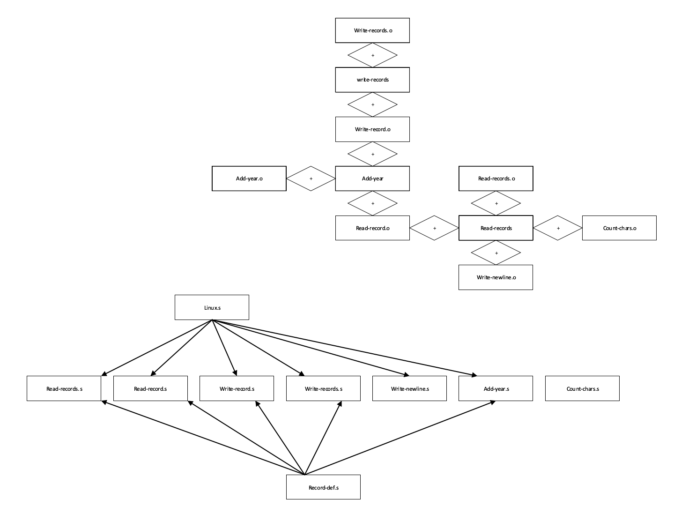

Von: Ivo Janowitz, Nguyen Anh Quang, Tillman Rossa, Roman Seiler, Alexander Uhl
ASCII Umwandlung
Wie macht man aus einem Zahlenwert 0...9 das entsprechende ASCII Zeichen?
Man addiert den ASCII Character für die Zahl '0' hinzu. Welches 0x30 oder 48 entspricht
Wie macht man im ASCII Code aus einem grossen Buchstaben einen kleinen Buchstaben?
Durch die Addition von 'a'-'A' (0x61-0x41=0x20 entspricht 32 dezimal) wird aus einem großen Buchstabe ein kleiner.
Character/Line Count
- Schreiben Sie ein Programm in Assembler, das die Anzahl der Zeichen und die Anzahl der Zeilen in einer Textdatei bestimmt und auf den Bildschirm (stdout) schreibt. Der Name der Datei wird als Argument an das Programm übergeben.
write.s.type write, @function .globl write .section .data .section .text .equ STDOUT, 1 .equ SYS_WRITE, 4 write: pushl %ebp movl %esp, %ebp pushl 8(%ebp) call count_chars addl $4, %esp movl %eax, %edx movl $STDOUT, %ebx movl $SYS_WRITE, %eax movl 8(%ebp), %ecx int $0x80 movl %ebp, %esp popl %ebp retconvert_number.s.type convert_number, @function .globl convert_number .section .data .section .text convert_number: ###CONSTANTS### .equ ST_ASCII_BUFFER, 8 .equ ST_NUMBER, 12 .equ ZERO, '0' pushl %ebp movl %esp, %ebp movl $0, %edi movl ST_NUMBER(%ebp), %eax convert_loop: movl $10, %ebx movl $0, %edx div %ebx #divides %eax by %ebx, stores modulo at %edx and result at %eax addl $ZERO, %edx pushl %edx incl %edi cmpl $0,%eax je reverse jmp convert_loop reverse: movl %edi, %eax movl $0, %edi movl ST_ASCII_BUFFER(%ebp), %ebx reverse_loop: popl (%ebx,%edi,1) incl %edi cmpl %edi, %eax je convert_end jmp reverse_loop convert_end: movl %ebp, %esp popl %ebp retprint.s.type print, @function .globl print .section .data .equ BUFFER_SIZE, 500 .lcomm BUFFER_DATA, BUFFER_SIZE .lcomm LINE_COUNT_ASCII, 100 .lcomm CHAR_COUNT_ASCII, 100 .section .text line_text: .asciz "Anzahl Zeilen: " char_text: .asciz "Anzahl Character: " blank_text: .asciz "\n" ###CONSTANTS### .equ ST_LINE_COUNT, 12 .equ ST_CHAR_COUNT, 8 print: pushl %ebp movl %esp, %ebp pushl ST_CHAR_COUNT(%ebp) pushl $CHAR_COUNT_ASCII call convert_number addl $8, %esp pushl ST_LINE_COUNT(%ebp) pushl $LINE_COUNT_ASCII call convert_number addl $8, %esp pushl $char_text call write addl $4, %esp pushl $CHAR_COUNT_ASCII call write addl $4, %esp pushl $blank_text call write addl $4, %esp pushl $line_text call write addl $4, %esp pushl $LINE_COUNT_ASCII call write addl $4, %esp pushl $blank_text call write addl $4, %esp finished_reading: movl %ebp, %esp popl %ebp retchar_counter.s.type char_counter, @function .globl char_counter .section .data .equ BUFFER_SIZE, 500 .lcomm BUFFER_DATA, BUFFER_SIZE .section .text ###CONSTANTS## .equ LOWERCASE_A, 'a' .equ LOWERCASE_Z, 'z' .equ UPPERCASE_A, 'A' .equ UPPERCASE_Z, 'Z' ###STACK CONSTANTS### .equ ST_BUFFER_LEN, 8 #Length of buffer .equ ST_BUFFER, 12 #actual buffer char_counter: pushl %ebp movl %esp, %ebp subl $4, %esp movl $0, -4(%ebp) movl ST_BUFFER(%ebp), %eax movl ST_BUFFER_LEN(%ebp), %ebx movl $0, %edi cmpl $0, %ebx je char_end_convert_loop char_loop: movb (%eax,%edi,1), %cl cmpb $UPPERCASE_A, %cl #Überspringe Zeichen kleiner als A(0x41) jl char_next_byte cmpb $LOWERCASE_Z, %cl #Überspringe Zeichen größer als z(0x7A) jg char_next_byte cmpb $UPPERCASE_Z, %cl #Wenn kleiner als Z(0x5A) incrementiere jle char_increment cmpb $LOWERCASE_A, %cl #Wenn größer als a(0x61) incrementiere jge char_increment jmp char_next_byte #Ansonsten überspringe Zeichen char_increment: incl -4(%ebp) char_next_byte: incl %edi #next byte cmpl %edi, %ebx #continue unless #we've reached the #end jne char_loop char_end_convert_loop: movl -4(%ebp), %eax movl %ebp, %esp popl %ebp retline_counter.s.type line_counter, @function .globl line_counter .section .data .equ BUFFER_SIZE, 500 .lcomm BUFFER_DATA, BUFFER_SIZE .section .text ###CONSTANTS## #ASCII Value of linebreak .equ LINEBREAK, 10 ###STACK CONSTANTS### .equ ST_BUFFER_LEN, 8 #Length of buffer .equ ST_BUFFER, 12 #actual buffer line_counter: pushl %ebp movl %esp, %ebp subl $4, %esp movl $0, -4(%ebp) movl ST_BUFFER(%ebp), %eax movl ST_BUFFER_LEN(%ebp), %ebx movl $0, %edi cmpl $0, %ebx je line_end_convert_loop line_loop: movb (%eax,%edi,1), %cl cmpb $LINEBREAK, %cl jne line_next_byte incl -4(%ebp) line_next_byte: incl %edi #next byte cmpl %edi, %ebx #continue unless #we've reached the #end jne line_loop line_end_convert_loop: movl -4(%ebp), %eax movl %ebp, %esp popl %ebp retcharacter_counter.s.include "linux.s" .section .data .equ BUFFER_SIZE, 500 .equ O_RDONLY, 0 .equ CHARCOUNT, -4 .equ LINECOUNT, -8 .lcomm BUFFER_DATA, BUFFER_SIZE .lcomm FILEIN, 4 .section .text char_count: .long 0 line_count: .long 0 .globl _start _start: movl %esp, %ebp subl $8, %esp movl $0, CHARCOUNT(%ebp) movl $0, LINECOUNT(%ebp) open_file: cmp $2, (%ebp) jne wrong_arguments movl $SYS_OPEN, %eax movl 8(%ebp), %ebx #Get Filename from Stack movl $O_RDONLY, %ecx movl $0666, %edx int $LINUX_SYSCALL store_fd_in: movl %eax, FILEIN read_loop_begin: movl $SYS_READ, %eax movl FILEIN, %ebx movl $BUFFER_DATA, %ecx movl $BUFFER_SIZE, %edx int $LINUX_SYSCALL cmpl $END_OF_FILE, %eax jle end_loop continue_read_loop: ### Counter Words pushl $BUFFER_DATA #location of buffer pushl %eax #size of the buffer call char_counter addl %eax,CHARCOUNT(%ebp) popl %eax #get the size back addl $4, %esp #restore %esp ### Count Linebreaks pushl $BUFFER_DATA #location of buffer pushl %eax #size of the buffer call line_counter addl %eax,LINECOUNT(%ebp) popl %eax #get the size back addl $4, %esp #restore %esp jmp read_loop_begin end_loop: pushl LINECOUNT(%ebp) pushl CHARCOUNT(%ebp) call print addl $8, %esp movl $SYS_CLOSE, %eax movl FILEIN, %ebx int $LINUX_SYSCALL movl $SYS_EXIT, %eax movl $0, %ebx int $LINUX_SYSCALL wrong_arguments: movl $SYS_EXIT, %eax movl (%ebp), %ebx int $LINUX_SYSCALL
Strukturdiagramm Read-Records

- Wie ist das Programm im Bartlett in Kapitel 6 strukturiert? Zeichnen Sie in einem Diagramm die Abhängigkeiten der einzelnen Dateien. Mit A ==> B kennzeichnen Sie, dass Datei B die Quelltextdatei A inkludiert. Mit A + B kennzeichnen Sie, dass die Objektdateien A und B miteinander gelinkt werden.
Going Further - Kapitel 6
Schreiben Sie das Programm um, so dass Kommandozeilenargumente verwendet werden.
add-year.s
.include "linux.s" .include "record-def.s" .section .data input_file_name: .ascii "test.dat\0" output_file_name: .ascii "testout.dat\0" .section .bss .lcomm record_buffer, RECORD_SIZE # Stack offsets of local variables .equ ST_INPUT_DESCRIPTOR, -4 .equ ST_OUTPUT_DESCRIPTOR, -8 .equ ST_ARG_1, 8 .equ ST_ARG_2, 12 .section .text .globl _start _start: # Copy stack pointer and make room for local variables movl %esp, %ebp subl $8, %esp # Open file for reading movl $SYS_OPEN, %eax movl ST_ARG_1(%ebp), %ebx movl $0, %ecx movl $0666, %edx int $LINUX_SYSCALL movl %eax, ST_INPUT_DESCRIPTOR(%ebp) # Open file for writing movl $SYS_OPEN, %eax movl ST_ARG_2(%ebp), %ebx movl $0101, %ecx movl $0666, %edx int $LINUX_SYSCALL movl %eax, ST_OUTPUT_DESCRIPTOR(%ebp) loop_begin: pushl ST_INPUT_DESCRIPTOR(%ebp) pushl $record_buffer call read_record addl $8, %esp # Returns the number of bytes read. # If it isn't the same number we # requested, then it's either an # end-of-file, or an error # quitting cmpl $RECORD_SIZE, %eax jne loop_end # Increment the age incl record_buffer + RECORD_AGE # Write the record out pushl ST_OUTPUT_DESCRIPTOR(%ebp) pushl $record_buffer call write_record addl $8, %esp jmp loop_begin loop_end: movl $SYS_EXIT, %eax movl $0, %ebx int $LINUX_SYSCALL # vim: expandtab ts=4 sw=4read-records.s.include "linux.s" .include "record-def.s" .section .data file_name: .ascii "est.dat\0" .section .bss .lcomm record_buffer, RECORD_SIZE .section .text #Main program .globl _start _start: #These are the locations on the stack where #we will store the input and output descriptors #(FYI - we could have used memory addresses in #a .data section instead) .equ ST_INPUT_DESCRIPTOR, -4 .equ ST_OUTPUT_DESCRIPTOR, -8 .equ ST_ARG_1, 8 #Copy the stack pointer to %ebp movl %esp, %ebp #Allocate space to hold the file descriptors subl $8, %esp #Open the file movl $SYS_OPEN, %eax movl ST_ARG_1(%ebp), %ebx movl $0, %ecx #This says to open read-only movl $0666, %edx int $LINUX_SYSCALL #Save file descriptor movl %eax, ST_INPUT_DESCRIPTOR(%ebp) #Even though it's a constant, we are #saving the output file descriptor in #a local variable so that if we later #decide that it isn't always going to #be STDOUT, we can change it easily. movl $STDOUT, ST_OUTPUT_DESCRIPTOR(%ebp) record_read_loop: pushl ST_INPUT_DESCRIPTOR(%ebp) pushl $record_buffer call read_record addl $8, %esp #Returns the number of bytes read. #If it isn't the same number we #requested, then it's either an #end-of-file, or an error, so we're #quitting cmpl $RECORD_SIZE, %eax jne finished_reading #Otherwise, print out the first name #but first, we must know it's size pushl $RECORD_FIRSTNAME + record_buffer call count_chars addl $4, %esp movl %eax, %edx movl ST_OUTPUT_DESCRIPTOR(%ebp), %ebx movl $SYS_WRITE, %eax movl $RECORD_FIRSTNAME + record_buffer, %ecx int $LINUX_SYSCALL pushl ST_OUTPUT_DESCRIPTOR(%ebp) call write_newline addl $4, %esp jmp record_read_loop finished_reading: movl $SYS_EXIT, %eax movl $0, %ebx int $LINUX_SYSCALL # vim: expandtab ts=4 sw=4write-records.s.include "linux.s" .include "record-def.s" .section .data #Constant data of the records we want to write #Each text data item is padded to the proper #length with null (i.e. 0) bytes. #.rept is used to pad each item. .rept tells #the assembler to repeat the section between #.rept and .endr the number of times specified. #This is used in this program to add extra null #characters at the end of each field to fill #it up record1: .ascii "Fredrick\0" .rept 31 #Padding to 40 bytes .byte 0 .endr .ascii "Bartlett\0" .rept 31 #Padding to 40 bytes .byte 0 .endr .ascii "4242 S Prairie\nTulsa, OK 55555\0" .rept 209 #Padding to 240 bytes .byte 0 .endr .long 45 record2: .ascii "Marilyn\0" .rept 32 #Padding to 40 bytes .byte 0 .endr .ascii "Taylor\0" .rept 33 #Padding to 40 bytes .byte 0 .endr .ascii "2224 S Johannan St\nChicago, IL 12345\0" .rept 203 #Padding to 240 bytes .byte 0 .endr .long 29 record3: .ascii "Derrick\0" .rept 32 #Padding to 40 bytes .byte 0 .endr .ascii "McIntire\0" .rept 31 #Padding to 40 bytes .byte 0 .endr .ascii "500 W Oakland\nSan Diego, CA 54321\0" .rept 206 #Padding to 240 bytes .byte 0 .endr .long 36 #This is the name of the file we will write to file_name: .ascii "est.dat\0" .section .text .equ ST_FILE_DESCRIPTOR, -4 .equ ST_ARG_1, 8 .globl _start _start: #Copy the stack pointer to %ebp movl %esp, %ebp #Allocate space to hold the file descriptor subl $4, %esp #Open the file movl $SYS_OPEN, %eax movl ST_ARG_1(%ebp), %ebx movl $0101, %ecx #This says to create if it #doesn't exist, and open for #writing movl $0666, %edx int $LINUX_SYSCALL #Store the file descriptor away movl %eax, ST_FILE_DESCRIPTOR(%ebp) #Write the first record pushl ST_FILE_DESCRIPTOR(%ebp) pushl $record1 call write_record addl $8, %esp #Write the second record pushl ST_FILE_DESCRIPTOR(%ebp) pushl $record2 call write_record addl $8, %esp #Write the third record pushl ST_FILE_DESCRIPTOR(%ebp) pushl $record3 call write_record addl $8, %esp #Close the file descriptor movl $SYS_CLOSE, %eax movl ST_FILE_DESCRIPTOR(%ebp), %ebx int $LINUX_SYSCALL #Exit the program movl $SYS_EXIT, %eax movl $0, %ebx int $LINUX_SYSCALLError Catch
- Fangen Sie Fehler ab, die beim Öffnen der Dateien auftreten können. Welche Fehlercodes es gibt, finden Sie in der man page "man 2 open". Sie können einen Schreibschutzfehler hervorrufen, wenn Sie die Datei als normaler Anwender an einem nicht erlaubten Ort öffnen, z.B. mit dem Pfad "/meine-datei.txt".
Todo: Replace DummyRecords with lseek
- Schreiben Sie ein Programm mit dem Sie auswählen können, welcher Datensatz ausgegeben werden soll. Sie geben auf der Kommandozeile einfach die Nummer 0, 1, 2, ... an, dann wird der jeweilige Datensatz ausgegeben. Mit dem Systemaufruf lseek() können Sie schnell an eine beliebige Stelle in der Datei gehen. Der Funktionscode für lseek in Register eax ist 19. Siehe "man 2 lseek".
.include "record-def.s" .include "linux.s" #PURPOSE: This function reads a record from the file # descriptor # #INPUT: The file descriptor and a buffer # #OUTPUT: This function writes the data to the buffer # and returns a status code. # #STACK LOCAL VARIABLES .equ ST_READ_BUFFER, 8 .equ ST_FILEDES, 12 .section .text .globl read_record .type read_record, @function read_record: pushl %ebp movl %esp, %ebp pushl %ebx movl ST_FILEDES(%ebp), %ebx movl ST_READ_BUFFER(%ebp), %ecx movl $RECORD_SIZE, %edx movl $SYS_READ, %eax int $LINUX_SYSCALL #NOTE - %eax has the return value, which we will # give back to our calling program popl %ebx movl %ebp, %esp popl %ebp ret